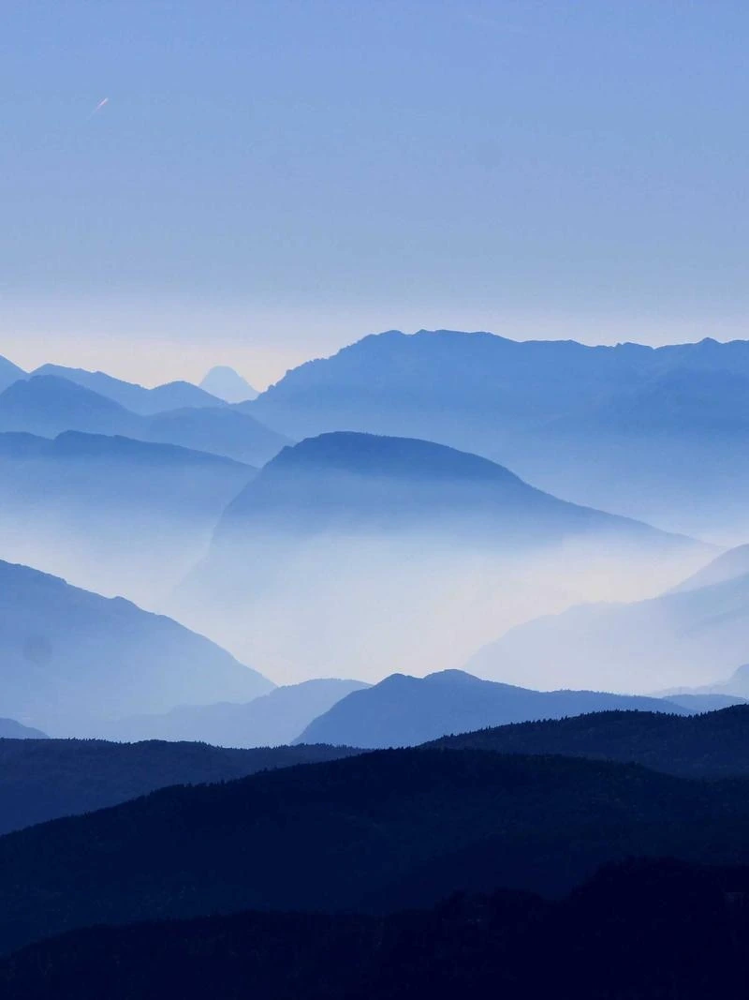

Crop to 1:1, 4:3 or 16:9
Freeform or a fixed ratio, with a 90° turn and a flip either way.
Crop, resize, upscale, compress and convert images in one window, up to 16,384 px. It runs on your machine, so nothing is uploaded and no file has a limit.
v1.0.0 · free and MIT licensed · works with the network off
Pick a file in the queue, set the tool in the inspector and watch the canvas. The file on disk stays untouched until you export.
The queue is empty. Drop images here to start again.

Original 33.2 kBCompressed 6.5 kB80% smaller
Freeform or a fixed ratio, with a 90° turn and a flip either way.
Type a width and height with the ratio locked, or switch to a percentage. Fit, fill, stretch or none.
Set the quality from 1 to 100 and read the encoded size before you save.
Open JPEG, PNG or WebP. Save JPEG, PNG, WebP or AVIF, one setting for the whole queue.
Choose 1.5×, 2×, 3× or 4×, up to 16,384 px. Sharp uses Lanczos3 with an anti-ringing clamp, and Pixel is nearest-neighbour for sprites.
Henko reads the images you pick and writes the files you export. There is no upload path, no account and no telemetry, and the whole app is one MIT-licensed repository.
Add as many files as you like, remove the ones you do not want and clear the rest in one click. Every file takes the same tool settings.
The name pattern takes {name}, {w}, {h}, {format} and {date}.
Short answers to the five things people ask before they install it.
Yes. Henko is MIT licensed, so there is nothing to buy, no account to make and no ads in the window.
It reads and writes only the files you pick, and it sends nothing out: no upload, no analytics, no account.
macOS 11 or later in one universal build, Windows 10 and 11 as an .msi or .exe, and Linux x86_64 as an AppImage.
Add the files to the queue, set the tools once, then export them with a pattern such as {name}_{w}x{h}.
Layers, masks and generative fill. Henko crops, resizes, upscales, compresses and converts; it does not retouch.
Every link opens the latest release on GitHub, where the source and the issues are too.
11 or later, Intel and Apple Silicon
Get the .dmg10 and 11, x64
Get the installerx86_64 desktop
Get the AppImage